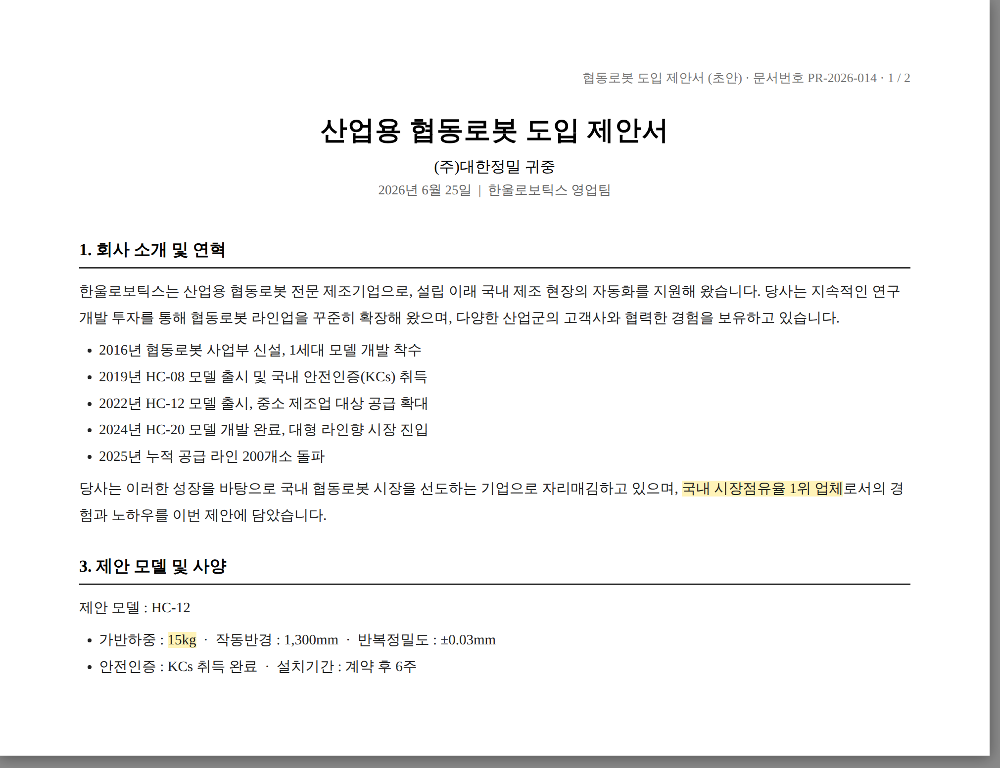
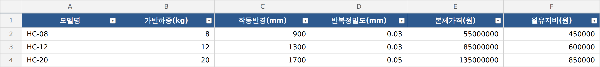

// 실습 6 · 제안서 내용 검증하기
개요¶
한 줄 목표: 동료가 쓴 영업 제안서 초안을 사양서·고객 요구사항과 대조해, 과장·불일치·누락을 잡아 사실대로 고치고 요구사항 충족 여부를 검사표로 정리하여 마무리한다.
이 실습에서 쓰는 업무 유형 — 확인하고 수정하기(검증·검수) 보고자료 만들기(초안 작성) · 여섯 가지 유형 다시 보기
오늘 받은 일¶
당신은 로봇 제조사 '한울로보틱스' 신입입니다. 팀장님이 말합니다.
"동기 김신입이 쓴 영업 제안서 초안인데, 과장이 좀 있는 것 같아. 사양서랑 고객 요구사항이랑 맞는지 보고 사실대로 고쳐줘. '이 정도면 됐다' 하고 그냥 올리면 사고 나. 틀린 건 눈에 띄는데 빠진 건 잘 안 보이니까 특히 조심하고."
지금까지는 내가 만든 결과물을 검산했지만, 실무에서는 남이 만든 결과물을 검토하는 일도 그만큼 자주 있습니다. 검산까지 마친 문서도 "이 정도면 됐다" 하다가 문제가 생기고, 내가 뭘 모르는지를 몰라 대응조차 하기 어려운 경우들도 있습니다. 그래서 이번 실습에서는 잘 모르는 분야의 문서를 AI와 함께 검증하는 절차를 익힙니다.
뭘 봐야 하는지 묻고, 관점을 나눠 검증하고, 사실로 다시 쓰고, 다시 검증하는 네 단계입니다. 끝나면 과장이 걷힌 제안서 수정본과 요구사항 충족 검사표가 남습니다.
폴더에 있는 것¶
| 파일 | 무엇 |
|---|---|
1.영업제안서_초안.pdf |
동료가 만든 로봇 판매 제안서 (과장·불일치·누락이 섞여 있음) |
2.제품사양서.xlsx |
자사 로봇 실제 사양 (모델별 가반하중·가격·유지비, 인증 현황) |
3.고객사_요구사항.pdf |
고객사 미팅 메모 — 요구사항 6개 |


실습에서 할 일¶
| 단계 | 할 일 |
|---|---|
| 1단계 | 뭘 확인해야 하는지 AI에게 물어 검토 체크리스트를 만든다 |
| 2단계 | 관점을 나눠 따로따로 검증한다 (사실·고객·검토자) |
| 3단계 | 문제를 종합해 사실에 맞춰 다시 쓴다 |
| 4단계 | 고친 제안서를 재검증하고 요구사항 충족 검사표를 작성한다 |